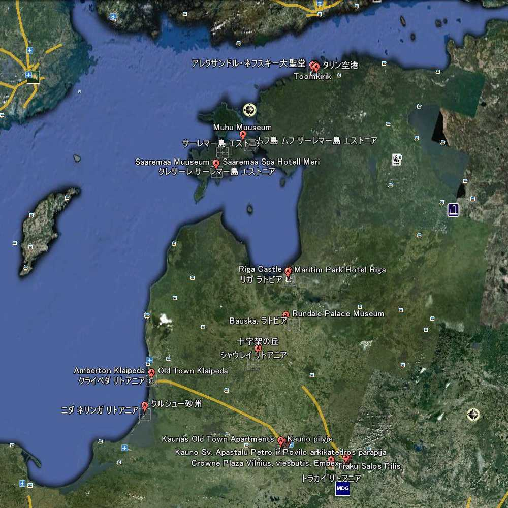

Vilnius Cathedral Ausros St.Anne Gediminas St.Peter St.Paul Traku Kaunas Klaipeda Kursiu Kryziu Riga Doms Pils St.James Blackheads Jugendstil Rundales Muhu Kuressaare Angla Tallinn Raekoja Toompea Toomkirik Nicholas Kadriorg Song Festival Grounds
 Google Earth AI解説
Google Earth AI解説


 趣味の旅行 Travel
趣味の旅行 Travel